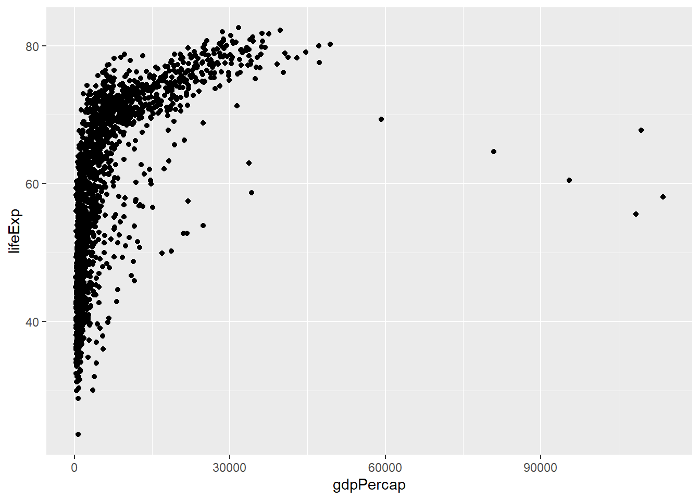

# install.packages("ggplot2")
library(ggplot2)Warning: package 'ggplot2' was built under R version 4.4.3Hadley Wickham’s ggplot2 package is a powerful extension to R for creating graphics. It implements a “grammar of graphics,” which breaks the task of plotting into several manageable steps. For standard plots, you usually only need three main steps:
ggplot(),geom_xxx() function to specify the type of plot (e.g., scatter, line, boxplot),If you want more control over the appearance of your plot, you can add layers such as scale, legends, or color options. You can start simple and progressively refine your plots.
ggplot2 produces more consistent and aesthetically pleasing outputs. It is particularly good when you need to combine different types of graphics or design custom visualizations.The typical steps for building a plot with ggplot2 are:
ggplot() to specify your data and aesthetics.geom_xxx() to define the type of plot.coord_cartesian(), scale_x_log10()),labs().A general formula to build a ggplot2 figure might look like this:
<...> indicates optional parameters.p stores all the data and settings for the plot and can be named arbitrarily.<data_frame> and <var_x> are placeholders you would replace with real column or data names.Before we start, please ensure you have installed ggplot2 package:
# install.packages("ggplot2")
library(ggplot2)Warning: package 'ggplot2' was built under R version 4.4.3This chapter draws from the following key sources:
Healy, Kieran (2018). Data Visualization: A Practical Introduction. Princeton University Press.
https://socviz.co/index.html
This book explains the use of ggplot in R and also covers some general principles of data visualization.
Claus O. Wilke (2019). Fundamentals of Data Visualization. O’Reilly Media.
https://serialmentor.com/dataviz
This book also uses R’s ggplot2 package, but the main text does not include code. It primarily discusses considerations when choosing chart types and how to combine different plot elements. Code is available for download on GitHub.
Winston Chang (2018). R Graphics Cookbook. O’Reilly Media.
Website: https://r-graphics.org
This is the second edition, which discusses various types of R plots.
Wickham, Hadley (2016). ggplot2: Elegant Graphics for Data Analysis. New York: Springer.
RStudio’s ggplot2 overview:
https://ggplot2.tidyverse.org/articles/ggplot2-specs.html
The following datasets will be used in the upcoming examples:
The gapminder dataset from the gapminder package contains data across different years for dozens of countries, including continent, life expectancy, population, and per capita GDP. It includes 1704 observations and 6 variables.
The gss_sm dataset from the socviz package includes part of the General Social Survey (GSS) data from the United States in 2016. It has 2867 observations and 32 variables. The variables mainly represent categorical attributes in social surveys, such as binary classification, ordinal classification, grouped numeric values, and integer values.
The midwest dataset from the ggplot2 package contains statistical data on counties in the Midwestern United States, such as land area.
gapminder dataset:
# install.packages("gapminder")
library(gapminder)Warning: package 'gapminder' was built under R version 4.4.3head(gapminder, 20)# A tibble: 20 × 6
country continent year lifeExp pop gdpPercap
<fct> <fct> <int> <dbl> <int> <dbl>
1 Afghanistan Asia 1952 28.8 8425333 779.
2 Afghanistan Asia 1957 30.3 9240934 821.
3 Afghanistan Asia 1962 32.0 10267083 853.
4 Afghanistan Asia 1967 34.0 11537966 836.
5 Afghanistan Asia 1972 36.1 13079460 740.
6 Afghanistan Asia 1977 38.4 14880372 786.
7 Afghanistan Asia 1982 39.9 12881816 978.
8 Afghanistan Asia 1987 40.8 13867957 852.
9 Afghanistan Asia 1992 41.7 16317921 649.
10 Afghanistan Asia 1997 41.8 22227415 635.
11 Afghanistan Asia 2002 42.1 25268405 727.
12 Afghanistan Asia 2007 43.8 31889923 975.
13 Albania Europe 1952 55.2 1282697 1601.
14 Albania Europe 1957 59.3 1476505 1942.
15 Albania Europe 1962 64.8 1728137 2313.
16 Albania Europe 1967 66.2 1984060 2760.
17 Albania Europe 1972 67.7 2263554 3313.
18 Albania Europe 1977 68.9 2509048 3533.
19 Albania Europe 1982 70.4 2780097 3631.
20 Albania Europe 1987 72 3075321 3739.gss_sm dataset:
# install.packages("socviz")
library(socviz)Warning: package 'socviz' was built under R version 4.4.3head(gss_sm, 20)# A tibble: 20 × 32
year id ballot age childs sibs degree race sex region income16
<dbl> <dbl> <labelled> <dbl> <dbl> <labe> <fct> <fct> <fct> <fct> <fct>
1 2016 1 1 47 3 2 Bache… White Male New E… $170000…
2 2016 2 2 61 0 3 High … White Male New E… $50000 …
3 2016 3 3 72 2 3 Bache… White Male New E… $75000 …
4 2016 4 1 43 4 3 High … White Fema… New E… $170000…
5 2016 5 3 55 2 2 Gradu… White Fema… New E… $170000…
6 2016 6 2 53 2 2 Junio… White Fema… New E… $60000 …
7 2016 7 1 50 2 2 High … White Male New E… $170000…
8 2016 8 3 23 3 6 High … Other Fema… Middl… $30000 …
9 2016 9 1 45 3 5 High … Black Male Middl… $60000 …
10 2016 10 3 71 4 1 Junio… White Male Middl… $60000 …
11 2016 11 2 33 5 4 High … Black Fema… Middl… under $…
12 2016 12 1 86 4 4 High … White Fema… Middl… under $…
13 2016 13 2 32 3 3 High … Black Male Middl… $8 000 …
14 2016 14 3 60 5 6 High … Black Fema… Middl… $12500 …
15 2016 15 2 76 7 0 Lt Hi… White Male New E… $40000 …
16 2016 16 3 33 2 1 High … White Fema… New E… $50000 …
17 2016 17 3 56 6 3 High … White Male New E… $50000 …
18 2016 18 2 62 5 8 Lt Hi… Other Fema… New E… $5 000 …
19 2016 19 2 31 0 2 Gradu… Black Male New E… $35000 …
20 2016 20 1 43 2 0 High … Black Male New E… $25000 …
# ℹ 21 more variables: relig <fct>, marital <fct>, padeg <fct>, madeg <fct>,
# partyid <fct>, polviews <fct>, happy <fct>, partners <fct>, grass <fct>,
# zodiac <fct>, pres12 <labelled>, wtssall <dbl>, income_rc <fct>,
# agegrp <fct>, ageq <fct>, siblings <fct>, kids <fct>, religion <fct>,
# bigregion <fct>, partners_rc <fct>, obama <dbl>Using the gapminder dataset as an example, we’ll create a basic scatter plot and progressively improve it. This dataset contains data from multiple countries over multiple years, including life expectancy and GDP per capita. In a scatter plot, each point represents one year of data for one country. The most important components of a scatter plot are how the data are mapped to the x- and y-axes.
First, call the ggplot() function and specify the dataset, mapping GDP per capita to the x-axis and life expectancy to the y-axis. The result is stored in an R object:
p <- ggplot(data = gapminder,
mapping = aes(
x = gdpPercap,
y = lifeExp))
p
The x and y axes are the most common aesthetics, but you can also map variables to color, shape, or line type. At this stage, you don’t need to specify actual colors or symbols — just map the variables to these graphical features.
In the call to ggplot(), the data =, mapping =, x =, and y = parts can be omitted for brevity. The same plot can be written as:
p <- ggplot(gapminder, aes(gdpPercap, lifeExp))Once the data and aesthetics are defined, you can create the plot by adding a geom_xxx() layer to specify the geometry type. Combine this with the result of ggplot() using a plus sign (+), like:
p + geom_point()
In fact, the code above is equivalent to calling print(p + geom_point()). In R functions or loops, you need to explicitly use print() — otherwise the result will not be shown.
To call print() explicitly, you can rewrite the code like this:
p1 <- p + geom_point()
print(p1)
By specifying a dataset, defining the aesthetic mappings, and choosing the appropriate geometry type, you can construct a basic plot. You can then improve the chart step by step by adjusting the coordinate system, axis labels, titles, legends, and color themes. In fact, the ggplot2 package already provides reasonable defaults, and users often only need to make small modifications.
The steps of building a plot are connected using the + operator — a unique syntax of ggplot2. For example, to add a fitted curve using the same mappings:
p + geom_smooth()`geom_smooth()` using method = 'gam' and formula = 'y ~ s(x, bs = "cs")'To overlay a scatter plot and a fitted curve using the same mappings:
p + geom_point() +
geom_smooth()`geom_smooth()` using method = 'gam' and formula = 'y ~ s(x, bs = "cs")'By default, geom_smooth() uses the gam() function to calculate the smoothed curve. You can specify different fitting methods using arguments in geom_smooth(), such as a linear model:
p + geom_point() +
geom_smooth(method = "lm")`geom_smooth()` using formula = 'y ~ x'Note: The variables needed by the geom_xxx() functions are extracted from the object p created by the ggplot() function.
In all the charts above, the x-axis variable (GDP per capita) is highly skewed with a long right tail, which causes most points to be compressed into the lower-left corner of the chart. You can improve the x-axis scale by applying a logarithmic transformation using the function scale_x_log10():
p + geom_point() +
geom_smooth(method = "gam") +
scale_x_log10()`geom_smooth()` using formula = 'y ~ s(x, bs = "cs")'In general, the fitted curve from a generalized additive model (GAM) is essentially a smoothed line. Note that when you apply a scale transformation, such as scale_x_log10(), the transformation is applied to the original data. However, the fitting in geom_smooth() happens after the transformation.
In the previous chart, the formatting of the x-axis tick labels could be improved. You can do this by using the appropriate label formatting function from the scales package and passing it to the labels argument of scale_x_log10():
p + geom_point() +
geom_smooth(method = "gam") +
scale_x_log10(labels = scales::dollar)`geom_smooth()` using formula = 'y ~ s(x, bs = "cs")'The labels argument of scale_xxx() functions determines how tick mark numbers are displayed on the axis. The argument value should be a function. If the scales package doesn’t offer a suitable one, you can define your own function to convert numeric values into strings.
The scales package provides label formatting functions for: comma, date, dollar, math, number, ordinal, pvalue, scientific, time, and more.
In the ggplot() function, the mapping argument within aes() is used to map variables to the x-axis, y-axis, color, shape, linetype, etc. These graphical element types can also be fixed as constants outside of aes().
For example, to use different colors to represent different continents, we map the continent variable to color:
p <- ggplot(gapminder, aes(
x = gdpPercap,
y = lifeExp,
color = continent))This code only maps continent to color, without specifying what the colors should be.
Here is a scatter plot with multiple smooth lines:
p + geom_point() +
geom_smooth(method="loess") +
scale_x_log10(labels=scales::dollar)`geom_smooth()` using formula = 'y ~ x'You can see that different continents have different colored dots, and each of the five continents has a fitted curve. However, some of the curves have different colors but visually similar hues, making it difficult to read. The legend on the right automatically generates a mapping between continent and color.
The following plot shows how to assign both point color and fill color for shaded areas using continent, by specifying both color and fill in aes():
p <- ggplot(gapminder, mapping = aes(
x = gdpPercap,
y = lifeExp,
color = continent,
fill = continent))
p + geom_point() +
geom_smooth(method="loess") +
scale_x_log10(labels=scales::dollar)`geom_smooth()` using formula = 'y ~ x'To specify a fixed color, try this:
p <- ggplot(gapminder, aes(
x = gdpPercap,
y = lifeExp,
color = "chartreuse4"))
p + geom_point() +
geom_smooth(method="loess") +
scale_x_log10(labels=scales::dollar)`geom_smooth()` using formula = 'y ~ x'We see that the scatter plot does not use chartreuse color, and the legend has an entry labeled "chartreuse4". This is because aes() only maps variables, so "chartreuse4" is treated as a new variable. To use a constant color, you should set color = outside of aes(), like this:
p <- ggplot(gapminder, aes(
x = gdpPercap,
y = lifeExp))
p + geom_point(color="chartreuse4") +
geom_smooth(method="loess") +
scale_x_log10(labels=scales::dollar)`geom_smooth()` using formula = 'y ~ x'The geom_xxx() function accepts many arguments related to color, transparency, shape, linetype, etc. For example, the code below sets the point transparency and line appearance:
p + geom_point(alpha=0.5) +
geom_smooth(method="lm", color="cadetblue1", se = FALSE, size = 4, alpha = 0.3) +
scale_x_log10(labels=scales::dollar)Warning: Using `size` aesthetic for lines was deprecated in ggplot2 3.4.0.
ℹ Please use `linewidth` instead.`geom_smooth()` using formula = 'y ~ x'Here, size sets the line thickness in mm, se = FALSE disables confidence intervals, and alpha sets transparency (0 to 1). Using transparency helps when many points overlap, as more overlap appears darker. You can also map transparency using aes(alpha = variable).
You can use the linetype argument to set line styles: 0 = solid line, 1–6 = dashed/dotted variations.
To add proper titles, use labs():
p <- ggplot(gapminder, aes(
x = gdpPercap,
y = lifeExp))
p + geom_point(alpha = 0.3) +
geom_smooth(method="gam") +
scale_x_log10(labels=scales::dollar) +
labs(
x = "GDP per capita",
y = "Life expectancy (years)",
title = "Relationship between Economy and Life Expectancy",
subtitle = "Each dot represents a country-year",
caption = "Data source: gapminder"
)As you can see, labs() sets the main title, subtitle, axis labels, and bottom-right caption. Axis tick label formatting (e.g., for numeric scale) must be done using the scale_xxx() function.
geom FunctionsIn the previous example, both color and fill were mapped to the variable continent in the ggplot() function. This made the scatter plot points colored by continent and also resulted in separate smooth curves for each continent. But what if we want a single smooth curve for all continents?
If needed, you can specify aesthetic mappings individually within a geom_xxx() function using mapping = aes(...). For example, the following code does not map continent to point color, but still allows geom_smooth() to show a unified curve:
p <- ggplot(gapminder, aes(
x = gdpPercap,
y = lifeExp))
p + geom_point(mapping = aes(color = continent)) +
geom_smooth(method = "loess") +
scale_x_log10(labels = scales::dollar)`geom_smooth()` using formula = 'y ~ x'You can also map a categorical variable to shape. For instance, filtering the 2007 data and mapping continent to shape:
p <- ggplot(
data = gapminder[which(gapminder$year == 2007),],
mapping = aes(
x = gdpPercap,
y = lifeExp,
shape = continent))
p + geom_point(alpha = 0.4, size = 4) +
scale_x_log10(labels = scales::dollar)This mapping is useful only when the number of points is relatively small. You can also use the size parameter to set symbol size (in mm). If multiple points share the same shape, you’ll need to manually assign shapes via shape = in geom_point(). You can use integer codes (0–25) or character names like "circle" for common symbols. See the ggplot2-specs vignette for details.
Note: Mapping a categorical variable will automatically group the data. color and fill mappings will typically imply a group aesthetic internally. However, for clarity, you may still need to map group explicitly.
You can also map a continuous variable to a color gradient. While this is uncommon for 2D function contour plots, it can sometimes reduce readability.
For example, mapping the logarithm of population size to a color gradient:
p <- ggplot(gapminder, aes(
x = gdpPercap,
y = lifeExp,
color = log(pop)))
p + geom_point() +
geom_smooth(method = "loess") +
scale_x_log10(labels = scales::dollar)When using RMarkdown to create documents, plots will automatically be embedded in the output (PDF, Word, HTML, etc.). However, for standalone export, you can use the following commands.
To save the most recently generated plot as a PNG file:
ggsave(filename = "image/filename.png")To save as a PDF:
ggsave(filename = "filename.pdf")You can also save a plot stored in a variable:
ggout01 <- p + geom_point()
ggsave(filename = "filename.pdf", plot = ggout01)You can specify size and scale using:
ggsave(filename = "filename.pdf", plot = ggout01,
height = 12, width = 8, units = "cm")Units can be specified as "in", "cm", or "mm".
When using the gapminder dataset to analyze the change in life expectancy over time (in years) for each country, you can use geom_line() to draw line plots. However, due to the large number of countries, simply specifying the x and y variables is not sufficient to produce meaningful plots, as shown below:
p <- ggplot(gapminder, aes(
x = year,
y = lifeExp)) +
geom_line()This does not produce the desired result of having one line per country, because the code does not specify grouping by country. Instead, the coordinates for all countries in the same year are connected by one line.
Note that geom_line() connects points in order of increasing x-coordinate. If you want to connect points by their row order, use geom_path() instead.
To fix this, you must specify grouping by country using the group aesthetic. Grouping works similarly to how x, y, color, or fill map variables. Here’s the corrected version:
p <- ggplot(gapminder, aes(
x = year,
y = lifeExp,
group = country)) +
geom_line()Each line now corresponds to a country. To find out which country has the lowest and most erratic life expectancy trend, you can use filter():
gapminder[which(gapminder$lifeExp < 30 & gapminder$year >= 1990),]# A tibble: 1 × 6
country continent year lifeExp pop gdpPercap
<fct> <fct> <int> <dbl> <int> <dbl>
1 Rwanda Africa 1992 23.6 7290203 737.The country is Rwanda.
To group by two or more categorical variables, use interaction(...). For example, to draw a line plot of life expectancy in Rwanda:
ggplot(gapminder[which(gapminder$country == "Rwanda"),],
aes(x = year,
y = lifeExp)) +
geom_line()In the above example, we filtered dataset as the first argument to ggplot(), and then further plotting layers can be added.
If you want to add scatter points to each observation, use geom_point() together:
ggplot(gapminder[which(gapminder$country == "Rwanda"),],
aes(
x = year,
y = lifeExp)) +
geom_line()+
geom_point()Note: The y-axis in such plots should start at 0 so that the filled area is proportional to the value. This is the default in ggplot2.
Another issue: If the x-axis is not numeric but a factor or string, the line segments will not connect.
o control color, line type, or line thickness in geom_line(), use the arguments color, linetype, and size. Line types include:
0: no line
1: solid
2: dashed
3: dotted
4: dotdash
5: longdash
6: twodash
Previously, the plots for all countries contained too many lines, making them cluttered. You can divide the plotting area into multiple small blocks called facets, which partition the data by one or two categorical variables. Each subset is plotted in a separate panel.
There are two types of facet functions:
facet_wrap() arranges the different plots into muliple rows and columns to cleanly fit on one page.
facet_grid() plots all the categories in 1 row or 1 column.
For the example above, we can place each continent’s graph in its own panel. Facets are not a type of aesthetic mapping but a way of laying out plots. Instead of setting facets inside aes(), we use the facet_wrap() function. For example:
ggplot(gapminder, aes(
x = year,
y = lifeExp,
group = country)) +
geom_line() +
facet_wrap(~ continent)To adjust where facet titles appear (top or bottom), you can use facet_wrap()’s strip_position argument and switch option.
By default, all facets share the same x and y axes range. If they differ, readers may get confused. If you want independent scales, you can use the scales argument in facet_wrap(). Setting it to "fixed" (default) shares scales. "free" makes both x and y axes independent, "free_x" shares only y-axis, and "free_y" shares only x-axis.
In facet_wrap(), use ncol to set number of columns, nrow for number of rows. The order should match the categorical variable’s defined order.
Below is an example using facet_wrap() to show life expectancy trends in different continents, with improved axis titles and labels. Note that the group = country mapping must only be used in geom_line() and not in geom_smooth(), or the smoother will be drawn separately for each country:
ggplot(gapminder, aes(
x = year,
y = lifeExp)) +
geom_line(
mapping = aes(group = country),
color = "gray70") +
geom_smooth(
method = "loess",
color = "cyan",
se = FALSE,
size = 1.1) +
facet_wrap(~ continent, ncol = 2) +
labs(
x = "Year",
y = "Life expectancy ",
title = "Trends in life expectancy in each country across five continents")`geom_smooth()` using formula = 'y ~ x'Note: the group = country mapping was moved from the ggplot() function into geom_line() to ensure smoothing is done at the continent level.
The facet_wrap() function is best for visualizing different values of a single categorical variable across panels. You can also specify number of rows and columns. For two variables, use facet_grid().
For example, using the gss_sm dataset, to plot a scatter of age vs. number of children:
p <- ggplot(gss_sm, aes(
x = age,
y = childs)) +
geom_point(alpha = 0.2)To split by both sex and race:
p + geom_point(alpha = 0.2) +
facet_grid(sex ~ race)Warning: Removed 18 rows containing missing values or values outside the scale range
(`geom_point()`).
Removed 18 rows containing missing values or values outside the scale range
(`geom_point()`).To add a smoother within each facet panel:
p + geom_point(alpha = 0.2) +
geom_smooth() +
facet_grid(sex ~ race)`geom_smooth()` using method = 'gam' and formula = 'y ~ s(x, bs = "cs")'Warning: Removed 18 rows containing non-finite outside the scale range
(`stat_smooth()`).Warning: Removed 18 rows containing missing values or values outside the scale range
(`geom_point()`).
Removed 18 rows containing missing values or values outside the scale range
(`geom_point()`).Although there’s no group mapping here, because the dataset is divided into 6 subsets by sex and race, each facet only contains its own data.
Some geom_xxx() functions directly plot the data values, such as geom_point(), geom_line(), while others like geom_smooth() compute and plot results based on a specific statistical method. Every geom_xxx() function has a default stat_xxx() function used for calculation, although you can also specify a different statistical rule manually.
Consider the example of a bar chart. The geom_bar() function in ggplot2 can automatically count the number of occurrences of a categorical variable and draw a frequency bar chart. For example, to create a frequency bar chart of the bigregion variable in the gss_sm dataset:
ggplot(gss_sm, aes(
x = bigregion)) +
geom_bar()The result is a bar chart showing the number of respondents in each region. In the chart, the x-axis is specified by the user, while the y-axis is the automatically calculated frequency. In fact, geom_bar() automatically calls the statistical function stat_freq() to compute the frequency for each region, generating new variables count and prop. By default, geom_bar() uses count (frequency).
Although ggplot2 can automatically calculate frequencies, it’s generally better to compute the frequencies in advance and use ggplot2 just for plotting.
This approach makes it easier to segment the steps and is especially useful when drawing bar charts. Therefore, the above example using tidyverse’s count() and ggplot2’s geom_col() can be rewritten as:
# Step 1: Count frequency of each region
freq_table <- table(gss_sm$bigregion)
# Step 2: Convert table to data frame
df1 <- data.frame(bigregion = names(freq_table), n = as.numeric(freq_table))
# Step 3: Add ratio column
df1$ratio <- df1$n / sum(df1$n)
# Step 4: Create bar chart using ggplot2
ggplot(df1, aes(
x = bigregion,
y = n)) +
geom_col() +
labs(y = "Count")To plot ratio:
ggplot(df1, aes(
x = bigregion,
y = ratio)) +
geom_col() +
labs(y = "Ratio")When the x-axis has many categories, the text labels for each group may overlap. Therefore, you can rotate the text labels 45 degrees:
ggplot(df1, aes(
x = bigregion,
y = ratio)) +
geom_col() +
labs(y = "Ratio") +
theme(
axis.text.x = element_text(
angle = 45, vjust = 1, hjust = 1))Another common way to solve overlapping category labels in a bar chart is to switch to a horizontal bar chart. The coord_flip() function in ggplot2 can be used to swap the x and y axes. This way, the category labels will be shown along the vertical axis but still be displayed horizontally, thus avoiding overlap:
ggplot(df1, aes(
x = bigregion,
y = ratio)) +
geom_col() +
labs(y = "Ratio") +
coord_flip()Sometimes people prefer more colorful and rich visualizations. The following example uses the gss_sm dataset to plot a bar chart of the religion variable, automatically assigning different colors to the bars by specifying fill = religion:
# Count the number of observations for each religion
df2 <- as.data.frame(table(gss_sm$religion))
colnames(df2) <- c("religion", "n")
p <- ggplot(df2, aes(
x = religion,
y = n,
fill = religion))
p + geom_col() +
labs(y = "Count")Because religion is mapped to both the x and fill aesthetics, a fill legend is automatically added to the right of the chart. This legend is redundant. You can manually remove it by using guides(fill = "none").
p + geom_col() +
guides(fill = "none") +
labs(y = "Count")Note: From a visualization theory perspective, the different colors in the chart above are unnecessary. Using a single color helps emphasize the data itself more effectively.
The bar chart above shows the frequency distribution of a single categorical variable. To visualize the joint distribution of two categorical variables, you can use segmented bar charts or side-by-side bar charts.
For example, using the gss_sm dataset, you can first calculate the frequency by grouping based on bigregion, then within each group, calculate frequencies by religion, and compute the proportion of each religion within each bigregion. The plot after using tidyverse to compute the statistics is as follows:
# Count frequency by bigregion and religion
tab <- table(gss_sm$bigregion, gss_sm$religion)
df3 <- as.data.frame(tab)
names(df3) <- c("bigregion", "religion", "n")
# Calculate ratio within each bigregion group
df3$ratio <- ave(df3$n, df3$bigregion, FUN = function(x) x / sum(x))
p <- ggplot(df3, aes(
x = bigregion,
y = n,
fill = religion)) +
geom_col()This type of chart makes it easy to compare the frequency proportions of the major categories (here, bigregion), and also allows for relatively easy comparison of the subcategories (here, religion) within each major category. However, it becomes relatively difficult to compare across subcategories between different major categories. If there are only two subcategories, then comparing them across major categories is not an issue.
Another approach is to normalize the height of each major category. The chart then only shows the relative proportions of subcategories within each major category, without showing the total frequencies of the major categories. It also does not allow for comparing the total frequencies of subcategories across different major categories, but does allow for easy comparison of subcategory proportions across major categories.
p + geom_col(position = "fill") +
labs(y = NULL)In the above code, the geom_col() function uses the option position = "fill".
A stacked bar chart can show the frequency of each combination of subcategories, making it easier to compare the proportion and frequency of subcategories within each major category. However, it is not easy to compare the proportions across the major categories.
ggplot(df3, aes(
x = bigregion,
y = n,
fill = religion)) +
geom_col(position = "dodge")Change the y-axis in the above chart to represent the proportion within each major category (so that the proportions for each region sum to 1):
ggplot(df3, aes(
x = bigregion,
y = ratio,
fill = religion)) +
geom_col(position = "dodge")To compare the distribution of religious proportions across different regions, you can use faceting to assign each region to a separate panel:
ggplot(df3, aes(
x = religion, y = ratio, fill=religion)) +
geom_col(position="dodge") +
labs(x=NULL, y="Ratio") +
coord_flip() +
facet_grid(~ bigregion) +
guides(fill="none")Bar charts (barplot) reflect the frequency distribution or proportion of categorical variables, whereas histograms reflect the distribution of continuous numerical variables.
When using geom_histogram() to draw a histogram, it can automatically select an appropriate number of bins, or you can manually specify the number of bins.
The midwest dataset included in ggplot2 contains statistical data for some counties in the Midwestern United States, such as area (unit: square miles). The following code uses a numerical variable that takes continuous values to draw a histogram using area and automatically determines the number of bins:
p <- ggplot(midwest, aes(x = area))
p + geom_histogram()`stat_bin()` using `bins = 30`. Pick better value with `binwidth`.The y-axis of the above histogram shows frequency (count), i.e., the count of each bin. geom_histogram() by default calls stat_bin() to perform binning and frequency counting. The shape of the histogram depends on the number of bins and the starting position of the bins.
You can use the bins argument to control the number of bins, use binwidth to control the width of each bin, or use center or boundary to set the alignment of bin centers or edges, respectively.
p + geom_histogram(bins = 15)You can use fill mapping in geom_histogram() to divide the histogram observations by a categorical variable. Then, the interior of each bar is colored based on the values of that variable. AThe length of each segment (with different colors) represents the frequency of a specific category within that bar.
# Filter for states OH and WI using base R
midwest_sub <- midwest[midwest$state %in% c("OH", "WI"), ]
ggplot(midwest_sub, aes(
x = area, fill = state)) +
geom_histogram(bins = 10)From the chart, we can see that counties with smaller land areas are mainly in OH, while counties with larger land areas are mainly in WI. geom_density() can be used to draw a density estimation curve for continuous variables.
ggplot(midwest, aes(x = area)) +
geom_density()The following code generates density estimates of land area for counties in each state, plotted on the same coordinate system.
ggplot(midwest, aes(
x = area,
color = state,
fill = state)) +
geom_density(alpha = 0.3)We can see that counties in IN and MI tend to have smaller areas, while counties in WI tend to have larger areas. The chart above can also be recreated by using geom_line(stat = "density") to draw multiple density curves.
ggplot(midwest, aes(
x = area,
color = state)) +
geom_line(stat = "density")The y-axis of geom_density() represents the density estimate. To plot histograms and density estimates on the same coordinate system, you need to change the y-axis of the histogram to also represent density estimates.
ggplot(midwest, aes(x = area)) +
geom_histogram(
mapping = aes(y = ..density..),
alpha = 0.6) +
geom_density(size = 1.1)Warning: The dot-dot notation (`..density..`) was deprecated in ggplot2 3.4.0.
ℹ Please use `after_stat(density)` instead.`stat_bin()` using `bins = 30`. Pick better value with `binwidth`.